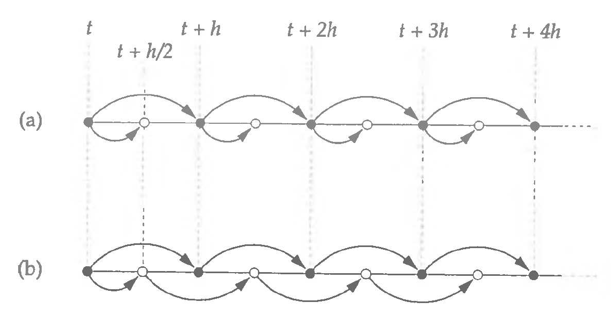
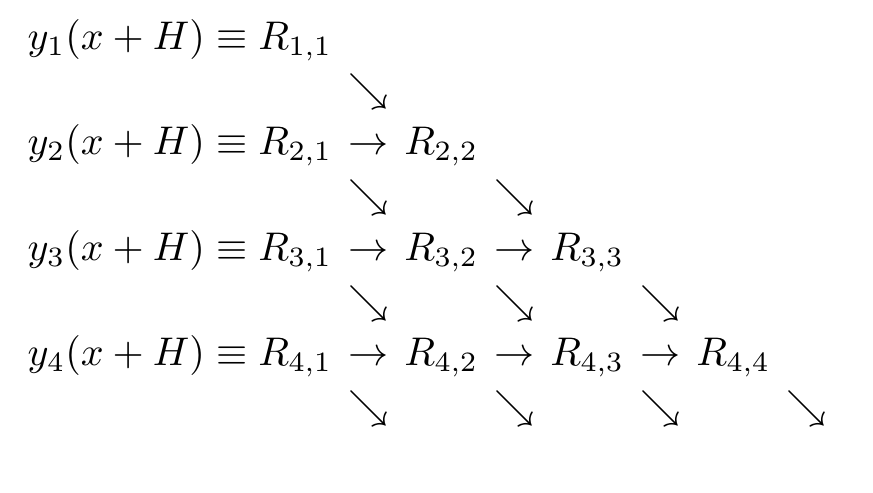

Beyond Runge-Kutta Methods
Midpoint Method
Recall the midpoint method:
$$ \begin{align} k_1 &= f(x, y) \\ k_2 &= f(x + h/2, y + (h/2) k_1) \\ y(x + h) &\approx y(x) + h k_2 \end{align} $$$k_2$ is an estimate of the derivative at the midpoint, both in $x$ and in $y$.
Midpoint Method
Let's rewrite the method in a slightly more suggestive way:
$$ \begin{align} y(x) &= y(x) \\ y(x + h/2) &= y(x) + (h/2) f(x, y) \\ y(x + h) &= y(x) + h f\left(x + h/2, y(x + h/2)\right) \\ \end{align} $$What happens at the next step?
The update from $y(x + h/2)$ to $y(x + 3h/2)$ is notably different from the update from $y(x)$ to $y(x + h)$.
Leapfrog Method
Let's remedy the asymmetry by reusing the value of $y(x + h/2)$:
$$ \begin{align} y(x + h) &= y(x) + h f\left(x + h/2, y(x + h/2)\right) \\ y(x + 3h/2) &= y(x + h/2) + h f\left(x + h, y(x + h)\right) \\ \end{align} $$This method "leapfrogs" over every half-step. What is the order of accuracy?
Leapfrog Method
Leapfrog Method
Why bother with another method with the same order of accuracy?
The leapfrog method has time-reversal symmetry:
$$ \begin{align} y(x - h) &= y(x) - h f\left(x - h/2, y(x - h/2)\right) \\ y(x - 3h/2) &= y(x - h/2) - h f\left(x - h, y(x - h)\right) \end{align} $$Setting $x \to x + 3h/2$, we get:
$$ \begin{align} y(x + h/2) &= y(x + 3h/2) - h f\left(x + h, y(x + h)\right) \\ y(x) &= y(x + h) - h f\left(x + h/2, y(x + h/2)\right) \end{align} $$These equations are just leapfrog method re-arranged.
Leapfrog Method
Time-reversal symmetry typically means that the method conserves energy. This method belongs to a larger family of symplectic methods.

Verlet Integration
The leapfrog method is also known as Verlet integration. Verlet integraion typically refers to a special case for second-order differential equations of the form:
$$ \frac{d^2 x}{dt^2} = f(x) $$If we perform the usual reduction of order, we have two first order equations:
$$ \frac{dx}{dt} = v(t),\quad \frac{dv}{dt} = f(x) $$Verlet Integration
Verlet integration is simply Leapfrog method applied to these two equations:
$$ \begin{align} x(t + h) &= x(t) + h v(t + h/2) \\ v(t + 3h/2) &= v(t + h/2) + h f(x(t + h)) \end{align} $$Note that you will need to jump-start the first step similar to Leapfrog:
$$ v(h/2) = v_0 + (h/2) f(x_0) $$What is the order of accuracy of Verlet integration?
Higher Order Symplectic Integrators
Verlet integration is a second order method. We can construct higher order integrators for general separable Hamiltonian systems:
$$ H(p, q) = T(p) + V(q) $$by taking $k$ substeps:
$$ \begin{align} q_{i+1} &= q_i + h c_i \frac{\partial T}{\partial p}(p_i) \\ p_{i+1} &= p_i - h d_i \frac{\partial V}{\partial q}(q_{i+1}) \end{align} $$For a given order of accuracy, the coefficients $c_i$ and $d_i$ need to be solved for (e.g. Yoshida 1990).
Modified Midpoint Method
Consider this proposition: start with an interval $H$, and sub-divide it to $n$ intervals with size $h = H/n$.
Apply the Leapfrog method to each sub-interval:
$$ \begin{align} y(x) &= y(x) \\ y(x + h) &= y(x) + h f(x, y) \\ y(x + 2h) &= y(x) + 2h f(x + h, y(x + h)) \\ y(x + 3h) &= y(x + h) + 2h f(x + 2h, y(x + 2h)) \\ y(x + 4h) &= y(x + 2h) + 2h f(x + 3h, y(x + 3h)) \\ \dots \end{align} $$Modified Midpoint Method
At the final point, we use an average:
$$ y(x + H) \approx \frac{1}{2} \left[y(x + nh) + y(x + (n-1)h) + h f(x + H, y(x + nh))\right] $$The nice thing about this construction is that the total error on $y(x + H)$ only contains even powers of $h$, from $h^2$.
How many evaluations of $f$ in total?
Modified Midpoint Method
For $n = 1$, where $h = H$, the modified midpoint method gives:
Let us suggestively denote this estimate $y_1(x + H) = R_{1,1}$. This estimate has error $\varepsilon_{1,1} = O(h_1^2)$.
Modified Midpoint Method
For $n = 2$, $h = H/2 = h_2$, let's call the modified midpoint result $y_2(x + H) = R_{2,1}$. The 2nd order error is now reduced by a factor of 4.
If we form the following linear combination, we can cancel out the 2nd order error.
$$ R_{2,2} = R_{2,1} + \frac{1}{3}(R_{2,1} - R_{1,1}) $$The error for $R_{2,2}$ is now $\varepsilon_{2,2} = O(h_2^4)$! Where did we see this before?
Bulirsch-Stoer Method
Forming a sequence of $n$, and then using polynomial extrapolation to go for higher order accuracy with a given $n$.
Instead of doubling $n$ every time, the suggested sequence is:
$$ n = 2, 4, 6, 8,\dots, 16;\quad n_k = 2k $$If we don't reach target accuracy at $n = 16$, use this error to refine $H$ and try again.
Bulirsch-Stoer Method
The formula to go from $R_{k, m}$ to $R_{k, m+1}$ is:
$$ R_{k, m+1} = R_{k, m} + \frac{R_{k,m} - R_{k-1,m}}{(n_k / n_{k-m})^2 - 1},\quad m = 1,\dots,k $$with error estimate:
$$ \varepsilon_{k,m} = \frac{R_{k,m} - R_{k-1,m}}{(n_k / n_{k-m})^2 - 1} + O(h_k^{2m + 2}) $$Bulirsch-Stoer Method
Bulirsch-Stoer Method
The implementation of the Bulirsch-Stoer method can be somewhat tedious. You generally start with some large $H$, refine it in $n$ sub-intervals and form the chain of higher and higher order accurate estimates.
If the error estimate reaches the target tolerance, take $x \to x + H$ and go to the next step.
If the error estimate still does not reach target tolerance, adjust $H$ according to the last estimate.
Bulirsch-Stoer Method
In general, if the solution is smooth, then the Bulirsch-Stoer Method is an excellent method, beating out all the adaptive Runge-Kutta methods.
If the right hand side $f$ comes from some table lookup, or has singularities in the domain, then use adaptive Runge-Kutta methods instead since they are less reliant on the niceness of the solution.